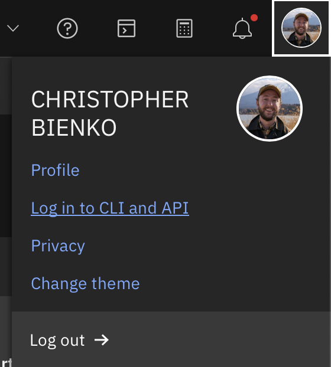
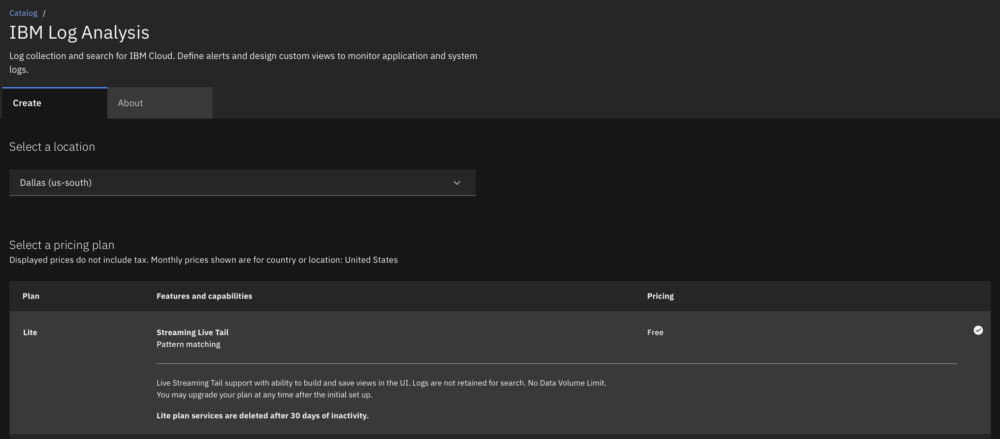
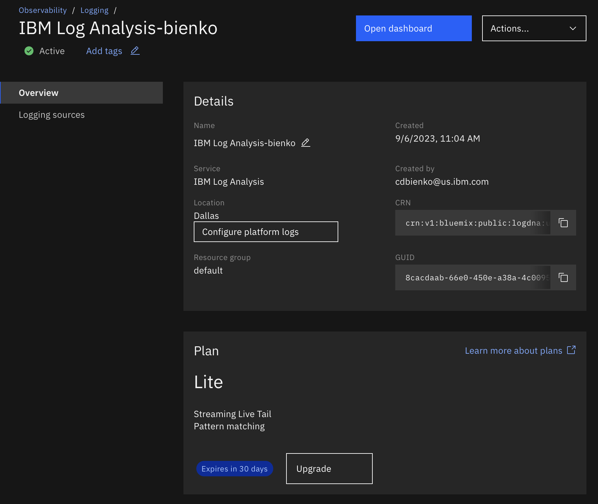
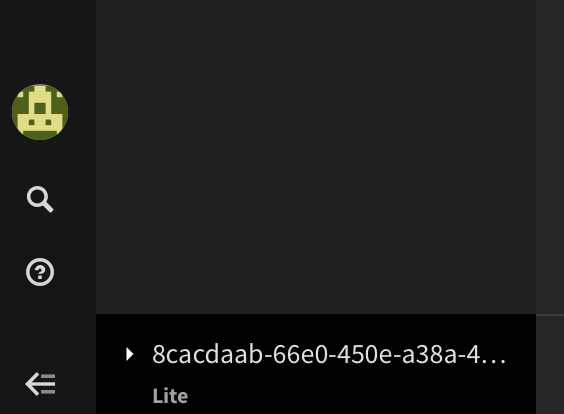
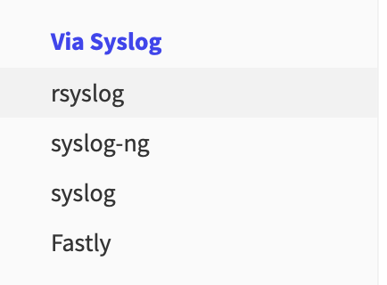
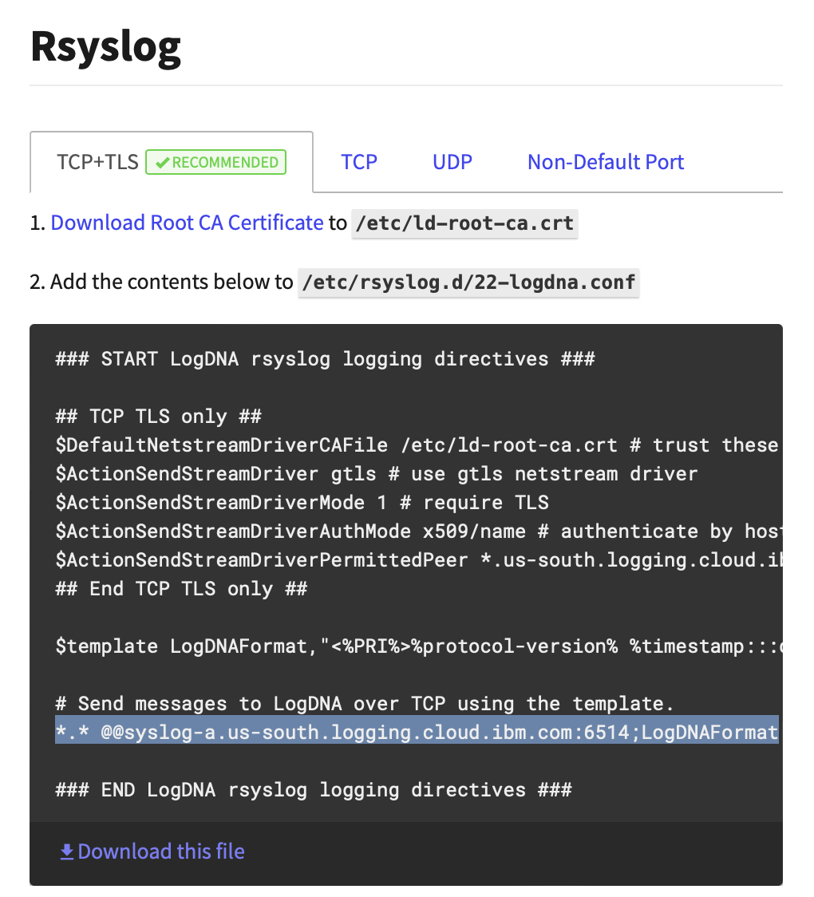
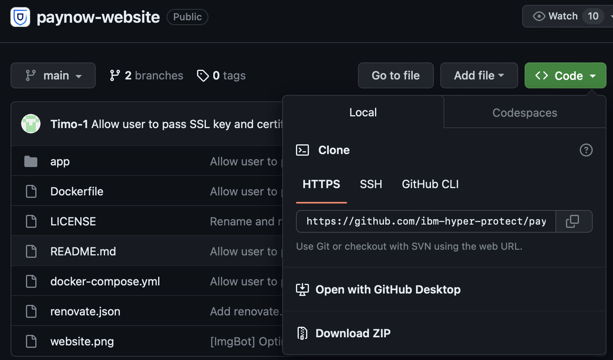
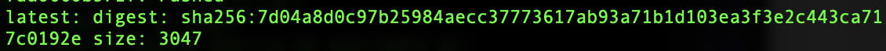

Prerequisites and Preparation
The following module will guide you through the necessary setup and configuration required before deploying the HPVS lab environment.
- Sign up for an IBM Cloud account and IBMid using the following link: https://cloud.ibm.com/registration
You will be asked to supply a credit card to be associated with the account. Any billing you accrue on your IBM Cloud account will be billed at the next IBM Cloud billing cycle to that credit card.
If your IBM Cloud account requires an API key for login or belongs with a Federated account (most IBM employees), you will need to supply additional instructions for logging in via the IBM Cloud CLI. A quick way to look up the necessary login string (with a one-time passcode) for your account is to first use your web browser to log in to www.cloud.ibm.com.

Once logged in, click on your user account icon in the top right-hand corner of the page and select Log in to CLI and API from the drop-down menu. A panel will open with a command line string that you can paste into your Terminal / PowerShell console for connecting via the IBM Cloud CLI.
- From the IBM Cloud web interface, provision a Lite plan of the IBM Log Analysis service from the following page:
https://cloud.ibm.com/catalog/services/logdna?callback=%2Fobserve%2Flogging%2Fcreate

Note that the "Lite" plan is free to use, but with limited functionality and only a 30 day window to operate before it is automatically de-provisioned. When configuring the service, use the following options:
-
Service Name: Set to a unique name of your preference.
-
Resource Group: Leave as default.
-
Tags and Access Management tags can be left blank.
Confirm that you have read and agree to the license agreements, then click Create to provision.

You will need to record details about the Ingestion Host and the Ingestion ID for reference at a later step.
They will be something similar to:
Locate the Host and ID specific to your environment by performing the following:
-
Click Open Dashboard from the Log Analysis service page on IBM Cloud
-
In the bottom-left corner of the dashboard, click the
?icon (forInstall Instructions).

- A panel to "Add Log Sources" will appear. From the left side of the panel, click to drill down into the rsyslog tab.

- In the top right of the page is a hidden string titled
Your Ingestion key is:. Click the clipboard icon to the right of the string and save this value in your records as the Ingestion ID.
- In a large grey box on-screen are the contents for the
/etc/rsyslog.d/22-logdna.conffile. Locate the two of lines towards the bottom which read:
# Send messages to LogDNA over TCP using the template.
*.* @@syslog-a.us-south.logging.cloud.ibm.com:6514;LogDNAFormat

- Your particular values will be different than the sample above. The second line is the one of interest to us at this time. Record YOUR unique values for the following segment:
syslog-a.us-south.logging.cloud.ibm.comincluding everything betweensyslogand.com. Save this value in your records as the Ingestion Host.
- Install the Homebrew package manager on your local machine. Alternatively, Windows or Linux clients can use other package managers (like
pip) if you wish; however, be aware that the install commands and syntax may vary between package managers.
If you do not have the Homebrew package manager installed in a macOS environment, execute the following instruction inside a Terminal console:
Follow the prompts until the installation has concluded, then continue with the lab guide instructions.
- Install the Docker container service by downloading the Docker Desktop version appropriate to your machine's operating system.
Alternatively, use the brew package manager to install Docker on your local machine. This will be required for connecting to the IBM Cloud Container Registry.
Follow the prompts until the installation has concluded, then continue with the lab guide instructions.
DOCKER DESKTOP MUST BE RUNNING
After installation, ensure that the Docker Desktop service is running on your machine (check the taskbar or launch the application manually). Otherwise, you will encounter errors in Step 7 when trying to compile the PayNow container image.
- On your local desktop or laptop, download and install Git. Click to expand more details on how to configure Git for your particular operating system.
macOS
-
Open the macOS Terminal shell prompt.
-
Execute the following instructions to install the Homebrew package manager:
-
Follow the instructions provided during the Homebrew installation to add Homebrew to your machine's local PATH.
-
Once the installation of Homebrew is complete, execute the following command to install Git:
-
After installation has concluded, verify the Git install using the following statement:
Windows
-
Visit the Git for Windows page and download the latest version to your machine.
-
Once the installer has started, follow the instructions as provided in the Git Setup wizard screen until the installation is complete.
-
Open the windows command prompt (or Git Bash if you selected not to use the standard Git Windows Command Prompt during the Git installation).
-
Execute the following to verify Git was installed:
- Use
Gitto clone the HPVS "PayNow" demo code repository from GitHub.
Enter the following command into Terminal to clone the repository via the command line:
Alternatively, if you visit the GitHub repository, click the green Code button and then Download ZIP from the drop-down menu. This will download the GitHub repository code to a directory of your choosing on your local machine.

The Pay Now Website is a simple application, that presents an interface to make payments. The application shows how sensitive payment related information (such as credit card data) is used. It is recommended to run this application in a confidential computing environment where PII data in use is protected from malicious actors.
- With Terminal, navigate to the
paynow-websitethat you just cloned/saved locally on your machine in the previous step. For example:
Once inside the directory, execute the following command to build the PayNow container image for the linux/s390x platform and tag the container image:
The container image build should take approximately 1 to 2 minutes to complete.
- Install the IBM Cloud Command Line Interface (CLI) for your local machine to manage resources in the IBM Cloud.
Instructions for how to do so across a variety of operating systems are provided online: https://cloud.ibm.com/docs/cli?topic=cli-install-ibmcloud-cli
Create a public SSH key which will be used for connecting to the virtual server instance that we will deploy later.
Within your IBM Cloud CLI or local Terminal command prompt, execute the following command to generate a public SSH key:
The command will generate two files— id_rsa and id_rsa.pub —which will be placed either under an .ssh directory (the exact directory address will be displayed to the command line, such as /Users/.ssh/id_rsa) or within the same directory that you executed the ssh-key -t rsa instruction from.
Execute the following instruction in the command line to open the current directory with your desktop file browser and look for the pair of key files:
SAVE this .pub file where you can easily retrieve it, as it will be necessary at a later stage.
- Next, install the IBM Cloud Code Engine plug-in:
DEPRECATION OF IBM CLOUD FOUNDRY (CF)
IBM Cloud Foundry or CF has been deprecated as of June 1, 2023. If you encounter any IBM Cloud documentation requiring the use of CF, substitute commands using the Code Engine API documentation in its place.
- Execute the following command to verify that the plug-in is installed:
- Log in to the IBM Cloud Container Registry with the following command:
CONNECTION ERROR
If you are unable to connect to the IBM Cloud Container Registry and receive an error similar to the following...
Failed to 'docker login' to 'us.icr.io' with error: Error saving credentials: error storing credentials...
You will need to remove an existing Docker configuration file from your local machine first. Do so with the following command:
Afterwards, try to connect to the IBM Cloud Container Registry again using the same command as before.
- Create a namespace and push the container image by running the following commands. Execute these in the SAME directory that you saved your
paynow-websiteclone in Step 6 and built your Docker container image in Step 7.
Wait until all of the components have successfully been pushed to the IBM Cloud repository.
Once complete, the Terminal console will report back with a RepoDigests value. COPY this value to a clipboard and save it for reference later.

- If you need to retrieve the digest value at a later time, you can do so by executing the following command. Do so now and also record the FULL print-out to a notepad. The information on your container registry will be useful at a later stage.
Next Steps
At this stage, the PayNow application's container image has been prepared and is now available for use in the IBM Cloud. In the following section, you will use these tools and technologies to generate a Contract for creation of an HPVS instance with the IBM Hyper Protect Container Runtime (HPCR) image.